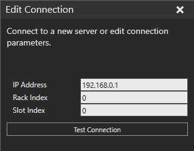
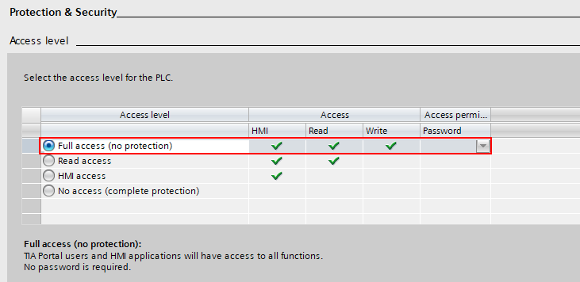
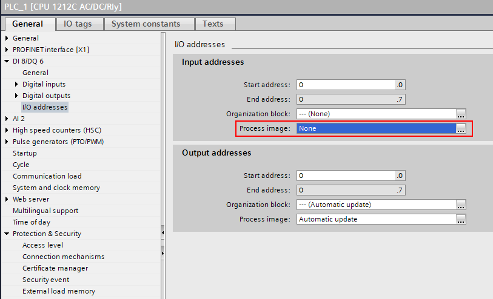

Connecting to a Siemens S7-series PLC
The Siemens S7 plugin allows you to connect to Siemens S7-series PLCs using a
S7 communication (S7comm) protocol. More specifically, it uses the “PUT” and
“GET” functionality of the S7comm protocol. It is based on TCP/IP and works over
Ethernet connection. For example, you can use the plugin to connect to S7-300,
S-400, S7-1200 or S7-1500 series physical PLCs or Simulated S7-1500 using
S7-PLCSIM Advanced.
Connection addresses
Define the IP address of the PLC or communication processor module. A normal
IPv4 address is used. The connection is always made to the PLC’s TCP port
102.

The rack and slot refer to the PLC CPU module position in a backplane.
|
PLC type |
Rack |
Slot |
|
S7-300 |
0 |
2 |
| S7-400 |
N/A |
N/A |
| S7-1200 |
0 |
0 or 1 |
| S7-1500 |
0 |
0 or 1 |
Notes:
- The values are not fixed for S7-400 series PLCs. Please
refer to Sharp 7 reference manual
for more info on how to determine the values.
Configuring the PLC project
You must first configure the PLC to allow read and write access through the
S7comm interface. The necessary steps are:
- Configure PLC Ethernet interface
- Define Protection & Security setting to allow access
- Disable security via access level setting
- Allow PUT/GET communication
- Disable physical input updating (optional)
Configure PLC Ethernet interface
Provide the PLC IP address and any other network settings for TCP/IP
communication.

Define Protection & Security setting to
allow access
Disable security via access level setting by selecting no protection.

PLCs with older firmware version, it looks like this:
Allow PUT/GET communication.

Disable physical input updating (optional)
The input process image can be written to from simulation to emulate PLC
inputs. However, updating any physical IOs to the input process image has to be
disabled, so the values written from the simulation will not get overwritten on
each PLC IO cycle.

Importing PLC Tag table
PLC variable information must be exported from TIA Portal to an SDF or Excel
file and then imported to the Siemens S7 connection plugin. Tag tables in
TIA Portal (STEP7) are used to give symbolic names to IO (I, Q) addresses and
assign variables to the generic memory (M) space.
To import a Tag table:
- Click the Connectivity tab, and
then in the Connectivity Configuration panel, under
Siemens S7, select your PLC
connection.
- In the
Properties task pane, click Load
PLC symbols from file button.
- Select the SDF or Excel file to import.
Notes:
- Loaded tags are saved with the connectivity configuration
both in simulation layout and when the Connectivity configuration is exported
as XML.
- After importing a Tag table,
you may need to reload the server
structure tree in the Add variables window to see the variables and
changes to them.
- When importing a Tag table, the Siemens S7 plugin automatically updates any existing variable pairs based on the tag
names. If any variable pairs were updated, it is indicated as a message
in the output panel.
- Automatic pairing by tag names allows you to make
changes to tag memory address and data type without need of recreating the
variable pairs.
- Tag names have to be defined and unique for this to
work. If the same tag name appears more than once in the imported tags, any
variables with that tag name are not updated, and an error message is
printed in the output panel.
Supported PLC memory areas
The S7comm protocol allows both read and write access to the following memory
areas:
- Input process image (“I” or “E” address)
- Output process image (“Q” or “A” address)
- Memory (“M” address)
Note: Normally the Input process image is overwritten
from physical inputs on every PLC IO cycle. However, you can disable this in PLC
configuration.
Limitations
Be aware, that there are certain practical limitation, when using S7comm
protocol:
- There is no browsing functionality available to discover
what variables exist on the PLC. This information must be obtained separately
from the PLC programming tool TIA Portal.
- You cannot validate if a given variable exists on the PLC.
The protocol allows reading and writing various PLC memory areas, but there is
no way to know if those memory areas are used by the PLC program as expected.
- The communication is not encrypted, and it does not
support password entry. The connection should only be made within a secure
network.
Performance
Generally, the response time and throughput achievable with the Siemens S7
connection plugin is limited by the PLC. However, for example in the case of
physical S7-1200, the S7comm communication is still remarkably faster than its
built-in OPC UA server.
Be aware that the following factors are affecting the performance:
- The S7comm requests are handled in between the PLC program
cycles, so if the PLC is running a massive program that consumes practically
all CPU time, the communication can be very slow.
- The S7comm protocol PDU size limit is quite restrictive,
being only 240 bytes on S7-1200 and 480 bytes on S7-1500. This limits how many
variables can be read or written with a single request. Processing of each
request on the PLC has more or less constant minimum delay, so request count
matters a lot.
- Network infrastructure can cause significant delay jitter.
Prefer direct cable connection to a physical PLC if possible. Running
simulated PLC in a virtual machine can also degrade performance.
General tips for best performance
- Avoid creating unnecessary variable groups.
- Make the network infrastructure used in communication as
simple as possible.
- Consider increasing the PLC minimum cycle time if the PLC
CPU load is high.
Optimizing reads from PLC
The S7comm protocol does not support event-based reading of values from the
PLC (subscriptions), and therefore cyclic updating is the only option. That is,
all variables from the PLC defined in a variable group is read on each
cycle.
The Siemens S7 plugin automatically optimizes reading variables from the PLC
by grouping variables with adjacent or overlapping memory areas that are read as
blocks within the MultiRead requests. This optimization has a large impact on
the number of requests required to synchronize the variable group and thus the
minimum achievable delay. To utilize this optimization, consider the following
rules:
- PLC tags have to be directly adjacent in memory without
any space in between or overlap each other.
- MW0 and MW2 are adjacents (bytes 0-1 and 2-3)
- I0.7 and I1.0 are adjacents (bit 7 in byte 0, bit 0 in
byte 1)
- I0.0 and I0.2 are not adjacent
(bit 0 in byte 0, bit 2 in byte 0)
- IW0 and I1.2 overlap (bytes 0
and 1, bit 2 in byte 1)
- I0.0 and M0.1 are not adjacent
(different memory areas I and M)
- Define your variable pairs in the same variable group
(Server to simulation). Optimization is done for each variable group
independently.
Optimizing writes to PLC
Tips for better write performance:
- Use cyclic update mode so that multiple variables can be
written in a single MultiWrite request. Set a reasonable update interval.
- Avoid connecting too many variables that change almost
constantly, such as joint values.
- Consider writing IO bits as unsigned integers instead of
individual Booleans. This can dramatically improve performance, but you need a
script on the R-Pro side to convert Booleans to bits in an Integer.
- Requires defining PLC tags of unsigned int types (e.g.,
BYTE or WORD) and connecting those to integers in simulation.
- The PLC tags can overlap in memory, so you can still
have separate tags for each IO bit as well.
- Note that R-Pro integers are 32-bit signed, so you
cannot use those to write values of 32 bits on the PLC, only 31 bits. In
practice, it would be best to use a separate variable for every 16 IO bits.